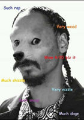
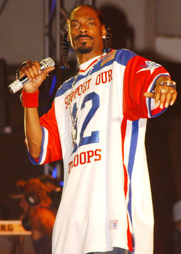

Snoop Dogg
 De: La Frikipedia, la enciclopedia extremadamente seria.
De: La Frikipedia, la enciclopedia extremadamente seria.
| De la serie raperos from around the world:
|
| Snoop Dogg
|
| 
|
| Snoop Dogg en vida y DVD
|
|
| Nacimiento
|
Nació como un perro
|
| Muerte
|
Morirá siendo perro Dogg 4 life niggaz
|
| Ocupación
|
Cantante de Gangsta
|
| Nacionalidad
|
West Coast
|
| Malo o Bueno
|
Delincuente y asesino
|
| ¿Es decente?
|
Sólo te digo que le gusta follarse las modelos en camarines
|
| Atentados contra la humanidad
|
Asesinar a otros raperos
|
| Estilo
|
Rap-Gangsta
|
| Notas
|
Este tipo es El master del gangsta Rap
|
Antes de leer: este hombre rapea de verdad, todo lo contrario lo podeis encontrar en Haze, Porta o Junior.
Snoop Dogg es un rapero yanki que nació siendo perro, pero siguió siendo perro toda su puta vida y aunque parezca humano es un simple perro drogado. Snoop Dogg literalmente en español significa Perro Vago. Es conocido por su voz cansina y erótica. Su estilo es relajado, y es como estuviese disfrutando de un orgasmo o un porro (a lo mejor es por eso lo de perro violado).
Biografía
Snoop Dogg es hijo de esnupi y de una actriz de uper-dance. Nació en un barrio lleno de camellos y prostitutas en los celia cruz. A él le gustaba mucho celia cruz y empezó a bailar y cantar la canción esa. Entonces pasó un mánager de la música y le dijo de trabajar de rapero. Él aceptó y a partir de entonces se hizo famoso y multimillonario. Los obreros que trabajaban con él a los pocos días murieron en extrañas circunstancias.
Un día, uno de sus mejores amigos no-perros, Tupac, fue asesinado, Snoop al enterarse de la noticia entro en depresión y se encerró en su casita por 150.000301 días, sin abrirle a nadie (ni siquiera a Chaly Brown),tampoco se quiso comer la sopa hecha de otros perros atropellado por algún camello que le había preparado su madre, entonces su madre le cogió del pelo y lo engancho en la turbina de un avión, de ahí las "trenzas" de su pelo.
Discografía
 En pleno estado de
Nirvana, después de fumarse 512 porros de Marihuana pura y antes de lanzar su
próximo disco.
Álbumes de estudio
- Dogg y su style de violación
- The Dogglamer pollas
- Da Game Is to Be Sold Not Maricónes (En español es Este juego es solo para Maricónes)
- No Limit para el sexo de Dogg
- Tha Last Meal (En español La última meada)
- Paid tha Cost to Be da Bo$$ gay (En español Hay que pagar el coste de ser el Jefe maricón)
- R&G (R&G es una camiseta de D&G que compró a un moro en el mercadillo)
- The Blue Carpeta llena de porno
Álbumes de compilación
- Dead Man Walkin (En español el hombre muerto es necrófilo)
- Snoop Dogg Presents...Doggy Style Allstars, Welcome to tha House Vol. 1 (En español Snoop Dogg presenta estilo de perro meando las piernas de las estrellas XD)
- Welcome to tha Chuurch (En español Bienvenidos a la Iglesia)
Álbumes de colaboración
- Dogg Food violated (En español Condones para perros violados)
- Snoop Dogg Presents Tha Eastsidaz (En español Snoop Dogg Presenta La Estupidez)
- Dulces 'N Trayz: The viejos Fashions son Ways
- The Hardcore es Way
- Calico Electrónico Is Active follando
Bandas Sonoras producidas por Snoop Dogg
- Murde was de polle (En español Muérdeme la polla)
- Smokefest Underground (En español Follando bajo tierra)
- The Wash de sable (En español Limpieza de sable, claramente se refiere a la limpieza de sable gay)
- Bones (En español es Todos sois unos hijos de puta)
Grandes éxitos
- Death Row: Snoop Doggy Dogg At His Best (En español Snoop Dogg es el mejor refiriéndose a el mejor cocainómano)
- Tha Dogg: Best of the Works (En español El Dogg: Lo mejor de sus trabajos refiriéndose a sus trabajos sexuales gays y sus trabajos como sicario)
- Snoopi-follado
Singles
- Who Am I (What's My Name)? (En español ¿Cual es mi nombre? eres tan gilipollas que ni te acuerdas cierto? (te doy una pista esta en el titulo del articulo))
- Gin and Juice (En español Quiero que lamas zumo de macho recién exprimido)
- Doggy Dogg no cabe en este World, tras seguir el la dieta de la super figutra en 5 dias de Fat Joe.
- Snoop's Upside Ya Head (En español A Snoop le han metido un tiro en la cabeza ya!! yuju!!! )
- Vapors (Refierendose al vapor que sale del calor de
follar rapear )
- We Just Wanna Party With You (En español En mi party van a morir personas, porque me va la necrofilia y si es con caballos mejor)
- Still a G Thang (En español Soy más gilipollas que Ali G)
- From tha Chuuuch to da Palace (En español Vamos a construir una Iglesia con forma de palacio Una canción con muchos mensajes subliminales para que la gente se una a alguna secta)
- Beautiful (En español Ese hipopótamo cadaver buenorro que pasa por ahí!! Fiuuuu fiuuuu)
- Drop It Like It's Hot (En español Me gusta estar caliente haciendome pajas mirando como dos monos se aparean)
- Let's Get Blown (En español es simplemente Eres Gilipollas? si lo eres no lo debes comprar,es mas ni siquiera deberías leer este articulo )
- Signs (En español Canciones de amor hacia personas de mi mismo sexo)
- Pichas & Downs (Una canción parecida a la de Junior pero diciendo Pichas Down en vez de solo Down)
- Real Soon (En español Realente Hijo (de
puta Chuck))
- Vato (En español Soy un chuloputas comemierdas que no le llego a la suela de los zapatos ni a los propios canis, violo a todos los gatos muertos que veo y me encanta hacerme pajas mirando como se consume una rata que lleva muerta tres dias. Por cierto daría todo mi dinero por grabar una pelicula porno de una orgía en la que me follase a un millón de ratas muertas que llevasen tres dias muertas a causa del sida. Soy el mismo hijo de puta de siempre y he vuelto otra vez para joderos a todos, ojalá esteis muertos todos cuando me de la vuelta, porque me gusta mucho comer pollas y mentes infantiles, adelante adelante, matad, los raperos somos así, el rap no es música, ni poesía, es solo violencia, drogas y es lo que piensan los canis y los que escuchan reggeton, ellos tienen razón, nunca usaré el xD porque eso es de homosexuales y frikis maricones y no maricones, solo eso hijos de la gran puta ')
- That's That´s That´s That Shit (En esta canción se demuestra que se tartamudó a causa de comer mierda y sopa de perros)
- I love follarme a Wakka en un paisaje Luguvre Uuuuhhh!!
Autor(es):
- Frikiman
- Fedeloko
- Zulhen
- Frikih
- Andrios
- Mierdashi
- Antrax69
- Wakeke
- Dogorap78
- Reports iscariot
Frikipedia 2005-2016, Licencia
GFDL 1.2 - Extraído por FrikiLeaks